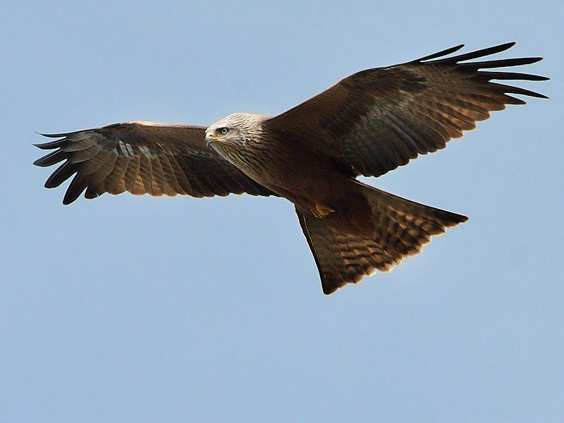

चीलBlack Kite
Milvus migrans · Accipitridae · BRD-0011

- Scientific name
- Milvus migrans (Boddaert, 1783)
- Family
- Accipitridae
- Hindi
- चील / काली चील
- Status here
- native
- IUCN
- LC
When to look कब देखें
Present all year.
चील / Black Kite
Milvus migrans (Boddaert, 1783) — Accipitridae
चील — चील भारत के आकाश की सबसे आम शिकारी चिड़िया है — और सबसे कम आँकी गई। यह मुख्यतः मेहतर (scavenger) है, न शिकारी। कसाईखाने के पास, नगरपालिका के कूड़े के ऊपर, नदी के पास मरे जानवरों पर — चील सफाई का काम करती है जो अन्यथा रोग फैलाएगा।
हिंदी परिचय Hindi Overview
चील (Milvus migrans) भारत के आकाश की सबसे आम शिकारी चिड़िया है — और सबसे कम आँकी गई। यह मुख्यतः मेहतर (scavenger) है, न शिकारी। कसाईखाने के पास, नगरपालिका के कूड़े के ऊपर, नदी के पास मरे जानवरों पर — चील सफाई का काम करती है जो अन्यथा रोग फैलाएगा। पर इसकी एक और क्षमता है — हवा में तैरते हुए हाथ से खाना छीनना। बाज़ार से चील द्वारा मांस छिनाई पूर्वांचल में एक आम अनुभव है।
Quick Identification त्वरित पहचान
| Feature | Description |
|---|---|
| Size | Medium-sized raptor (55–65 cm total length); wingspan 130–150 cm; weight 600–1000 g |
| Plumage | Uniformly dark brown; slightly paler, streaked head and underparts |
| Tail | Distinctly forked (notched) tail; twisted constantly to steer in flight |
| Wings | Long, broad, deeply "fingered" wingtips (outer primaries) |
| Bare parts | Black hooked bill with a yellow cere (fleshy base); yellow legs |
| Behaviour | Effortless gliding in thermals; bold scavenger, will snatch food near markets |
Field tip: Any large, brown raptor circling endlessly over towns or dumps in eastern UP is almost certainly a Black Kite. The notched/forked tail is the best way to separate it from buzzards and eagles in flight.
Morphology आकारिकी
Biometrics (subspecies govinda, northern India — the form in eastern UP):
| Measurement | Range |
|---|---|
| Total length | 550–600 mm |
| Wing (flattened chord) | 425–480 mm |
| Tail | 265–310 mm |
| Tarsus | 50–57 mm |
| Bill (culmen from base) | 30–36 mm |
| Weight | 650–900 g |
Body: Medium-sized raptor — larger than a crow, smaller than an eagle. Body uniformly dark brown with slightly paler streaked underparts. Head and neck paler — may appear almost whitish in strong light.
Wings: Long, broad, with slightly "fingered" wingtip primaries. Wing formula adapted for soaring — large surface area relative to body weight.
Tail: The diagnostic feature: distinctly forked (notched) tail, which is frequently twisted and flexed mid-air to steer. This tail flexion while soaring is visible from distance and is the best field character.
Bill: Strong, hooked, yellow with yellow cere. Eyes yellow-brown. Legs yellow.
Vocalisations
The Black Kite has a highly distinctive, far-carrying call that is frequently heard in urban areas.
- Squealing whinny: A high-pitched, shrill, shivering whinny, often described as kleee-errr followed by a rapid vibrato kr-r-r-r-r, resembling a stallion's whinny.
- Alarm call: A rapid series of sharp, piping pip-pip-pip notes given when other raptors or crows approach its nest.
- Roost calls: Short conversational whistles and squeaks exchanged in communal roosting canopies at dusk.
Ecological Role पारिस्थितिक भूमिका
Scavenger-in-chief: Black kites are the dominant aerial scavengers across South Asian towns and cities. They consume: animal carcasses, fish offal from markets, kitchen waste, garbage dump material, roadkill, and dead poultry. In eastern UP towns, kites perform the same nutrient-recycling function that vultures perform in rural areas — and are filling the ecological void left by the catastrophic vulture decline (diclofenac poisoning, 1990s-2000s).
Vulture decline and kite expansion: The near-extinction of Old World vultures (particularly Gyps bengalensis) from diclofenac poisoning created a carcass-processing vacuum. Black kites, being more generalist and less dependent on large carcasses, have not suffered as severely and now dominate scavenging niches previously shared with vultures.
Urban-adapted predator: While primarily a scavenger, black kites will actively take: house sparrows, small chicks, lizards, large insects, frogs, and fish (snatched from the water surface). They steal food from other birds by aerial piracy (kleptoparasitism).
Thermals: Uses rising warm air (thermals) over towns — buildings, market areas, and sunlit roads generate the strongest thermals. A group of 20–50 kites circling in a thermal ("kettle") is a common sight over Basti, Ayodhya, and Faizabad towns.
Life Cycle / Phenology जीवन चक्र
- December–February: Nest building; 2–3 eggs.
- January–March: Incubation (30–32 days).
- March–May: Chicks in nest; intense provisioning by parents.
- May–June: Fledglings leave nest; young learn to hunt/scavenge.
- July–November: Non-breeding; roaming, communal roosting.
Nest: Built on tall trees (often mango, eucalyptus, or Peepal) in towns, or on tall buildings. A bulky stick platform, often decorated with human rubbish — plastic bags, cloth, wire — incorporated into the structure. Pairs reuse and add to nests over years.
Communal roost: Outside breeding, kites gather in large communal roosts (hundreds to thousands) in tall trees near rivers or in large parks. The sound of a kite roost at dusk — a cacophony of whistling calls — is a characteristic sound of eastern UP towns.
Host Plants or Prey आहार
Primary food and prey:
- Carcasses, garbage waste, and animal offal from markets
- Fledgling sparrows (Passer domesticus) and common myna young
- Lizards (such as garden lizards Calotes versicolor) and small frogs
- Flying termites and large grasshoppers during monsoons
Predators / Natural Enemies शत्रु
- Lesser Adjutant (Leptoptilos javanicus) — competes at carcass sites; may prey on chicks
- Jungle Cat (Felis chaus) — stalks fledglings resting on lower branches or ground
- House Crow (Corvus splendens) — mobs adult kites; raids nests for eggs
Agricultural / Human Relevance कृषि एवं मानव उपयोग
Public health service: By consuming carcasses quickly, kites reduce the pathogen load in the environment (anthrax spores, botulism) and reduce populations of disease-carrying flies and rats that would otherwise breed on carcasses. This is a real, quantifiable public health service.
Food snatching: Black kites near markets and fairs regularly snatch food from human hands — a nuisance but rarely dangerous. Their talons can cause minor cuts. Street food stalls in UP towns need to be covered.
Human-kite conflict: Occasionally, kites nest on building ledges causing mess. The birds are legally protected (Schedule IV, WPA 1972) — nests cannot be removed during breeding season.
Poisoning risk: Black kites are vulnerable to secondary poisoning from rat poison (endosulfan, brodifacoum) and pesticide-contaminated prey. Local declines near intensively farmed areas have been documented.
Expected Locally स्थानीय रूप से अपेक्षित
Not a field record. Written from published accounts for eastern Uttar Pradesh. No confirmed local sighting yet — if you have seen it, that is what the atlas needs.
अभी तक स्थानीय पुष्टि नहीं। यह विवरण प्रकाशित स्रोतों से है, किसी अवलोकन से नहीं।
Abundant resident observed year-round over Basti, Ayodhya, and Gonda towns. Large numbers are regularly seen circling in thermals over municipal dumps and fresh markets. Nesting starts in December in mature Neem and roadside Peepal trees, with bulky nests easily visible before tree leaves grow.
Distribution वितरण
Global range: Widespread across temperate and tropical parts of Eurasia, Africa, and Australasia; palearctic populations are highly migratory, wintering in Africa and southern Asia.
In India: Widespread and abundant throughout the country, from the plains up to 4,000 m in the Himalayas, strictly associated with human habitations.
In Uttar Pradesh: Abundant resident across all urban, semi-urban, and rural areas.
In Basti district / eastern UP: Abundant year-round resident; found circling over Basti, Ayodhya, and Gonda towns, and nesting near village markets.
Range notes: No significant range changes documented.
Research Questions शोध प्रश्न
- Has the black kite population in Basti and Ayodhya towns increased since the vulture collapse (post-2000) — and can historical records be compared?
- What is the carcass processing rate (kg/day) of the kite population around a typical eastern UP slaughterhouse?
- Are kites accumulating sub-lethal pesticide loads from contaminated prey in agricultural areas near Basti?
- How does the communal roost size near Saryu vary seasonally — and does it correlate with fish market activity?
- Do kites use plastic in nest construction preferentially (for insulation/waterproofing) or accidentally — and does plastic incorporation affect nest or chick outcomes?
Similar Species मिलती-जुलती प्रजातियाँ
| Species | How to distinguish |
|---|---|
| Haliastur indus (Brahminy Kite) | Distinctive white head and breast, chestnut body; square tail |
| Gyps bengalensis (White-rumped Vulture) | Much larger; bald head; white rump visible in flight; tail not forked |
| Butastur teesa (White-eyed Buzzard) | Smaller; white iris; barred below; tail not forked |
Taxonomy & Classification वर्गीकरण
Original description. Milvus migrans was described by Pieter Boddaert in 1783 as Falco migrans in Table des Planches Enluminéez d'Histoire Naturelle de M. D'Aubenton, page 28. Type locality: France. It was later placed in the genus Milvus Lacépède, 1799.
Subspecies. Five subspecies are currently recognised:
| Subspecies | Authority | Range | Notes |
|---|---|---|---|
| M. m. govinda | Sykes, 1832 | Pakistan, India, Nepal, Bangladesh, Sri Lanka, Indochina | Eastern UP form — Small Indian Kite; smaller, darker, more urban-adapted |
| M. m. migrans | (Boddaert, 1783) | Europe, northwest Africa, Middle East | Nominate form; migratory |
| M. m. lineatus | (Gray, 1831) | Siberia, Central Asia, Himalayas to wintering South Asia | Black-eared Kite; larger, white patch under wing |
| M. m. affinis | Gould, 1838 | Sulawesi, New Guinea, Australia | Fork-tailed Kite; smaller |
| M. m. parasitus | (Daudin, 1800) | Sub-Saharan Africa, Madagascar | Yellow-billed Kite (often split as a separate species) |
Family and order placement. Belongs to the order Accipitriformes, family Accipitridae (hawks, eagles, and kites). The family Accipitridae is a large, diverse group of diurnal birds of prey.
Phylogenetic notes. Genetic analyses support Milvus as a distinct monophyletic genus within the subfamily Milvinae. Some authorities treat the Yellow-billed Kite (M. parasitus) and Black-eared Kite (M. lineatus) as distinct species, though hybridization in overlap zones is common.
IUCN status rationale. Assessed as Least Concern (LC) by the IUCN Red List. It is one of the most abundant diurnal birds of prey in the world. It thrives in urban environments with poor refuse management, which provide abundant foraging opportunities.
Photo Gallery फ़ोटो गैलरी
Note: Add field photos tomedia/species/black_kite/
फोटो निर्देश: बाज़ार के पास हवा में मंडराती चील, उड़ान के समय काँटेदार पूँछ, और घोंसले में लटका प्लास्टिक।
Photos needed आवश्यक फोटो
- [ ] Soaring in flight showing deeply notched tail (उड़ते हुए काँटेदार पूँछ)
- [ ] Perched close-up on building edge (भवन की मुंडेर पर बैठा)
- [ ] Feeding on fish waste at market (बाज़ार में खाना ढूँढते)
- [ ] Large nest in tall tree showing incorporated rags/plastics (कचरे से सजा घोंसला)
Atlas Connections संबंधित प्रजातियाँ
- House Sparrow — prey; kites occasionally hunt sparrows near roosts (BRD-0007)
- Indian Flying Fox — shares communal roost trees; some competition for perch space (MAM-0001)
- Peepal — primary nesting and roost tree in towns (FLR-0006)
- Banyan — communal roost tree near rivers (FLR-0010)
References सन्दर्भ
- Boddaert, P. (1783). Table des Planches Enluminéez d'Histoire Naturelle de M. D'Aubenton. Utrecht, p. 28. [original description]
- Sykes, W.H. (1832). Catalogue of birds of the Dukhun. Proceedings of the Committee of Science and Correspondence of the Zoological Society of London, 2, 77–149. [description of govinda]
- Ali, S. & Ripley, S.D. (1978). Handbook of the Birds of India and Pakistan. Vol. 1, pp. 227–230. Oxford University Press, New Delhi.
- Grimmett, R., Inskipp, C. & Inskipp, T. (2011). Birds of the Indian Subcontinent. 2nd ed. Christopher Helm, London.
- Prakash, V. et al. (2003). Catastrophic collapse of Indian White-backed Vulture populations. Biological Conservation, 109(3), 381–390.
- BirdLife International (2024). Milvus migrans. IUCN Red List of Threatened Species. Ver. 2024.
- GBIF Occurrence Data — Milvus migrans, Uttar Pradesh (2010–2025).
Source file: species/fauna/birds/black_kite.md